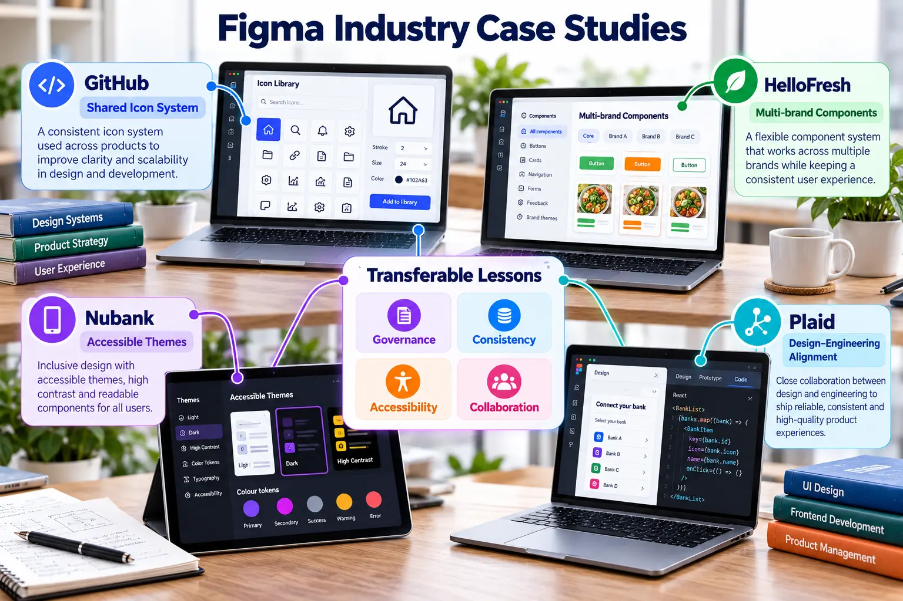
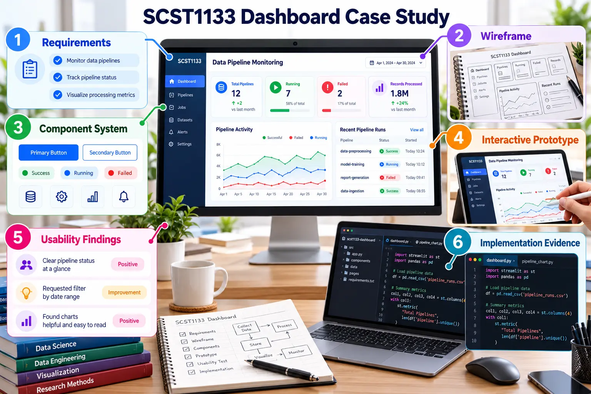

Figma supports systems of work, not only individual mock-ups
Professional teams use shared components, design tokens, collaboration and developer integration to maintain quality at scale.

Case study comparison
| Organisation | Design challenge | Lesson for students |
|---|---|---|
| GitHub | Maintain a shared icon system and enable wider contribution. | Design assets require governance, naming and reusable standards. |
| HelloFresh | Support consistent experiences across multiple brands. | Components and variants can preserve shared structure while allowing brand differences. |
| Nubank | Deliver accessible and localised experiences. | Tokens and themes help adapt a system without rebuilding every screen. |
| Plaid | Reduce fragmented workflows between product, brand and engineering. | A shared design language improves cross-functional collaboration and handoff. |

Case study activity
Select one organisation
Identify its challenge, Figma practice and measurable organisational value.
Connect the lesson to SCST1133
Explain how the same principle could improve the Data Pipeline Monitoring Dashboard.
Propose one implementation
Create or revise one component, variable, prototype interaction or documentation rule.
Expected evidence
- A one-page case analysis.
- A screenshot of the applied design improvement.
- A short reflection linking design consistency to software quality.